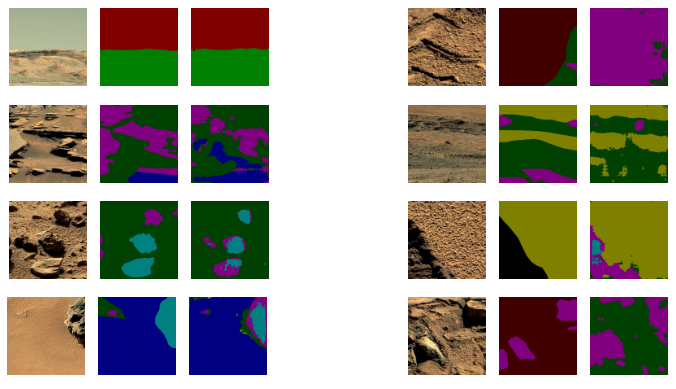
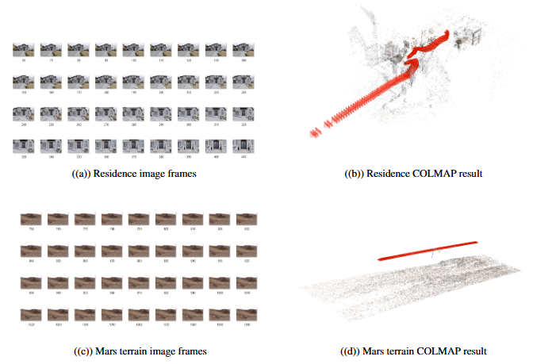

Semantic Segmentation for Mars Terrain Analysis
DeepLabV3 Model Performance on Mars Terrain
Example of semantic segmentation results showing different terrain classifications
3D Reconstruction Using COLMAP
3D reconstruction of Mars terrain using COLMAP for enhanced terrain analysis
About the Project
This research project focuses on developing advanced perception systems for autonomous planetary exploration through semantic segmentation of Mars terrain. The goal was to improve terrain classification and analysis capabilities for Mars rovers using deep learning techniques. By implementing state-of-the-art computer vision models and 3D reconstruction techniques, we aimed to create a robust system for analyzing and understanding Martian terrain features.
What I Learned
Through this project, I gained extensive experience in computer vision and deep learning applications. I developed a deep understanding of semantic segmentation models and their practical applications in analyzing complex terrain features. The project provided hands-on experience with 3D reconstruction techniques using COLMAP, allowing me to understand how to create detailed terrain models from 2D images. I also learned about synthetic data generation using Infinigen, which proved crucial for augmenting our training dataset with realistic Mars-like terrains.
The implementation of DeepLabV3 gave me practical experience in fine-tuning deep learning models for specific use cases. I learned to handle challenges unique to planetary terrain analysis, such as dealing with low contrast images and similar textures across different surface elements. This project significantly enhanced my understanding of how to apply computer vision techniques to real-world problems in space exploration.
Tools & Technologies
The project utilized a comprehensive set of tools and technologies. DeepLabV3 served as our primary model for semantic segmentation, chosen for its effectiveness in handling complex visual tasks. We implemented COLMAP for 3D reconstruction, which helped us better understand terrain structures from 2D images. For data augmentation, we used Infinigen, a procedural generator that created synthetic training data with realistic Mars-like features.
The S5Mars dataset, containing 6,000 images with ground truth masks, formed the foundation of our training data. We implemented the project using Python as our primary programming language and PyTorch as our deep learning framework. This combination of tools allowed us to create a robust and efficient system for Mars terrain analysis.
Key Achievements
The project achieved several significant milestones. We successfully implemented a semantic segmentation system that achieved 74% validation accuracy on Mars terrain classification, a promising result given the challenges of the task. The system demonstrated robust performance in identifying various terrain features, from rocks and sand to more complex elements like ridges and holes.
We successfully evaluated and compared multiple state-of-the-art models, ultimately developing a comprehensive pipeline for Mars terrain analysis. The system proved capable of handling complex terrain features and provided valuable insights for future planetary exploration missions. These achievements demonstrate the potential of deep learning techniques in advancing autonomous planetary exploration capabilities.